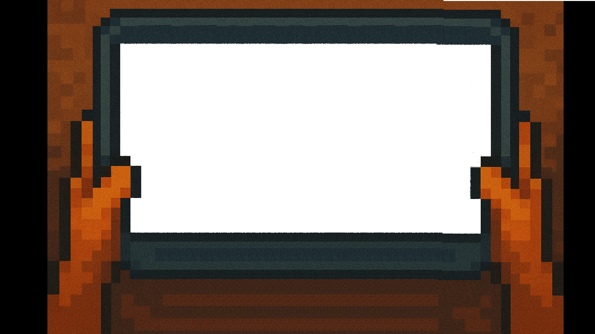

Wetter
Achtung! Trockene Luft!
Bleib lieber im Glas!
Events
Sie wollen Ihren liebsten beeindrucken?
Lernen Sie jetzt Ihre persönlichen Schneekreise zu malen
und verzaubern Sie Ihren Schwarm… ❤️
Keine weiteren Neuigkeiten.

Weiter